Obras Maestras · 4200 m.s.n.m. · Freddy Mamani
Cada cholet es un universo visual: color, geometría y cosmovisión aimara fusionados en hormigón y vidrio.
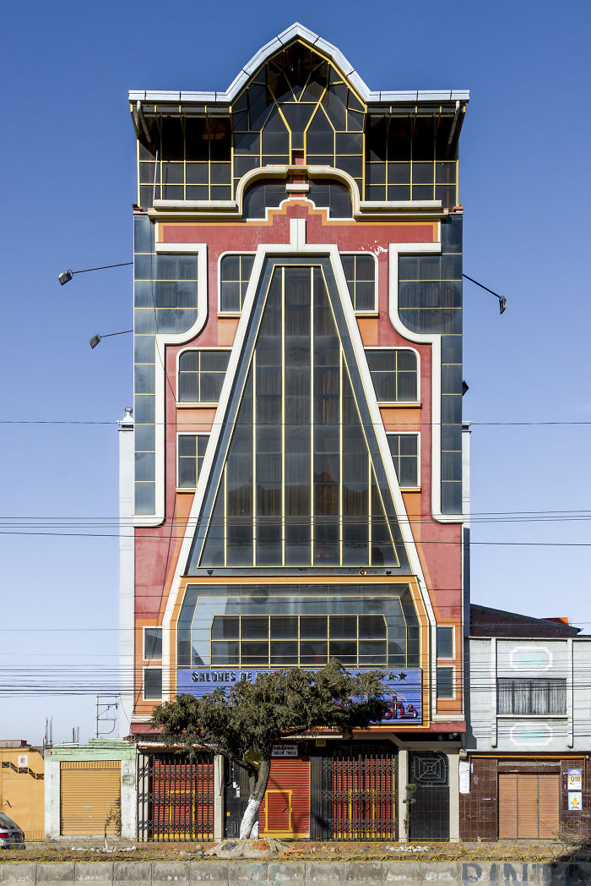
Metropolis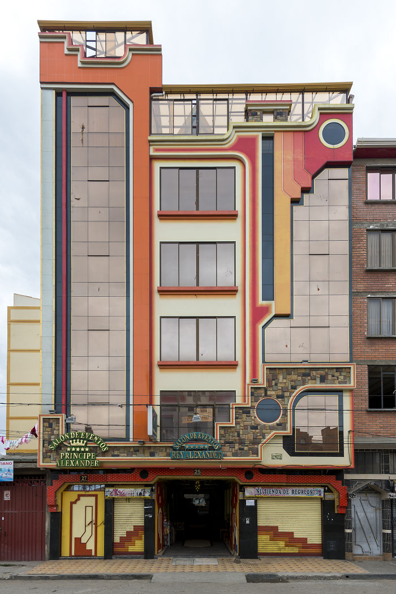
Transformer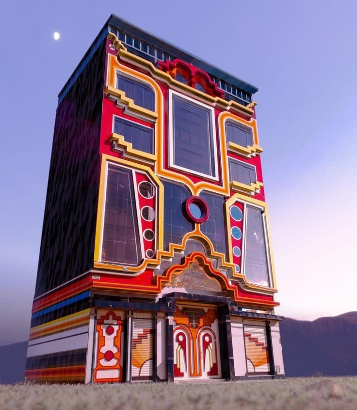
Salón Cóndor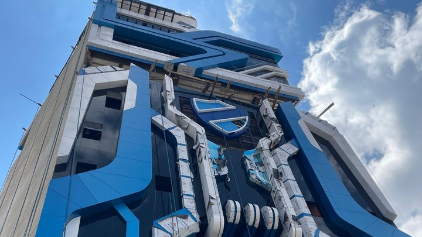
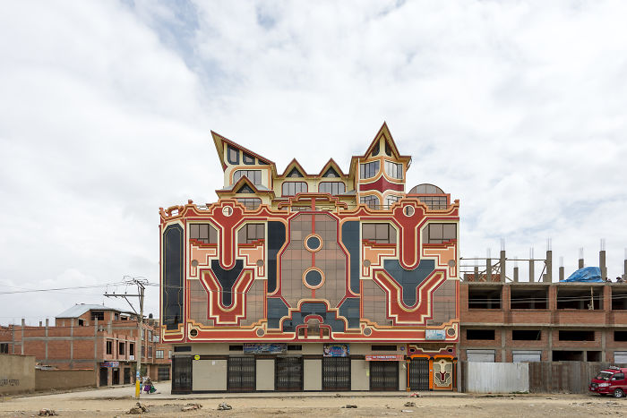
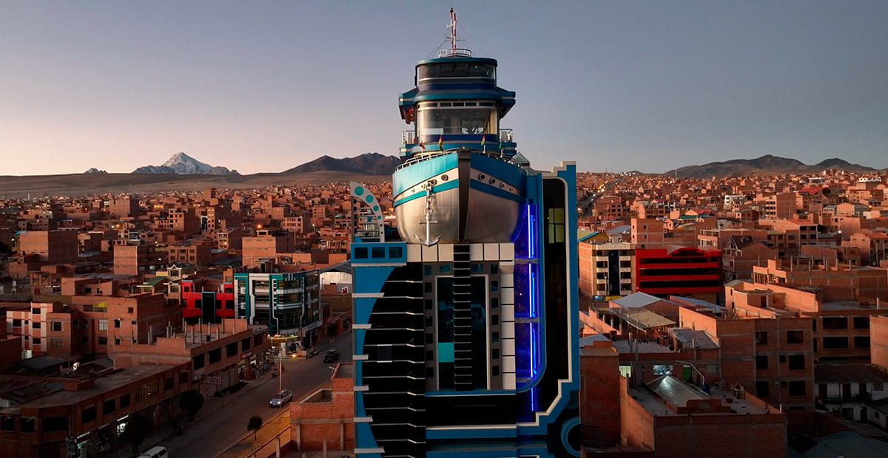
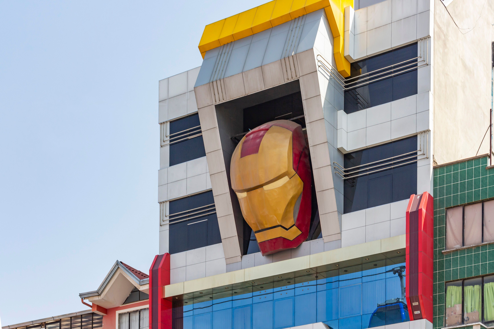
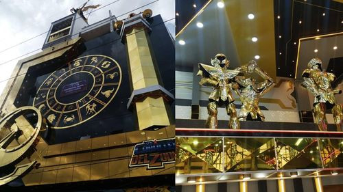
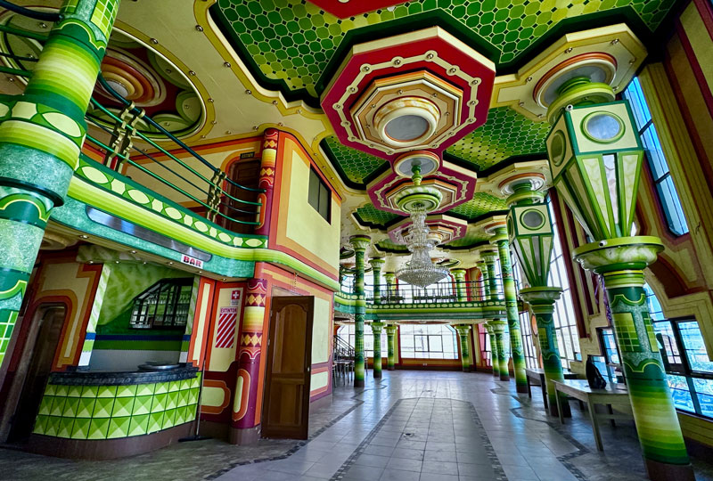
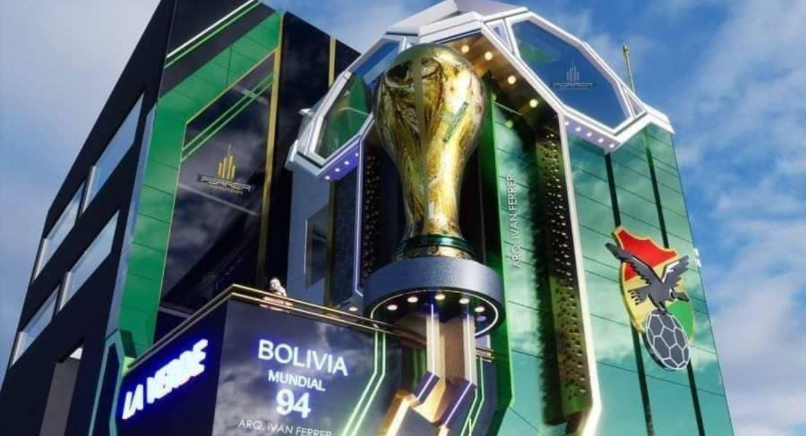
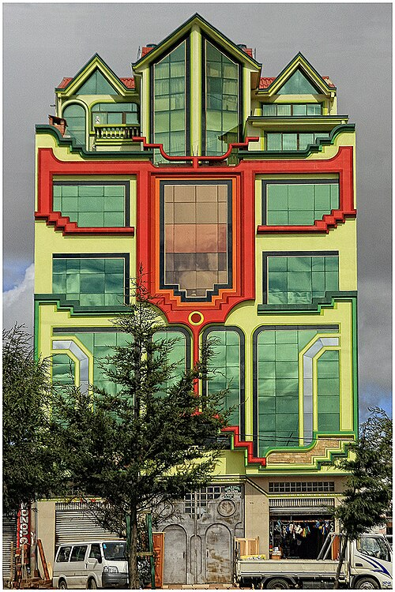
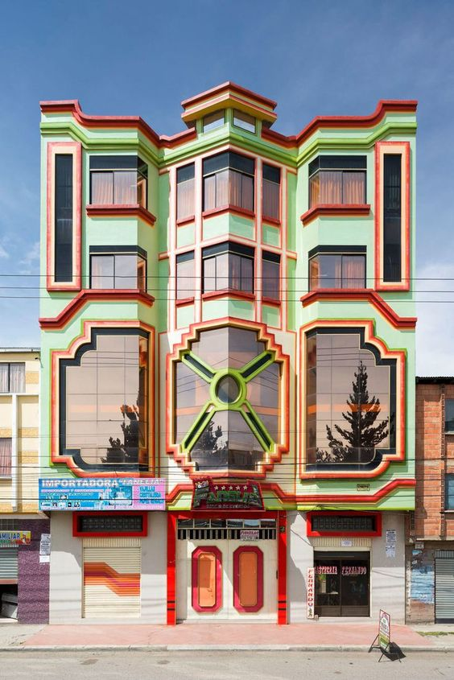
A 4150 metros sobre el nivel del mar, la ciudad aimara más joven del continente es el escenario donde nació un lenguaje arquitectónico sin precedentes en América Latina.
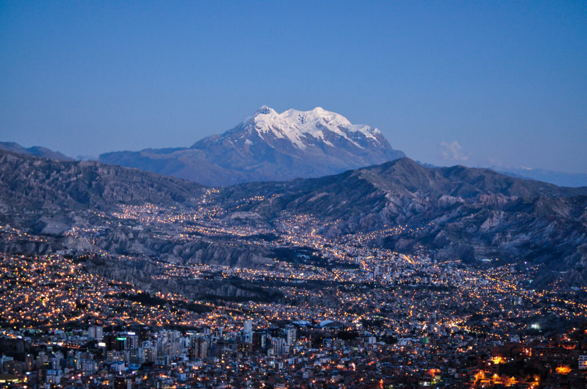
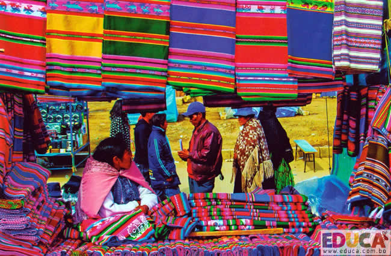
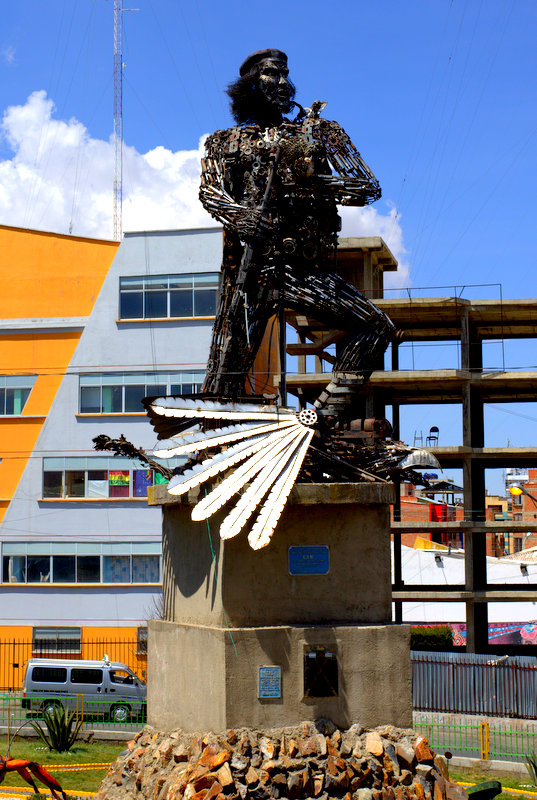
5 paradas, una mirada profunda al lenguaje neo-andino. Salidas desde la estación Roja del Teleférico (La Paz) o desde la Ceja de El Alto.
Recogida en la estación de Cementerio o directamente en la Ceja de El Alto. Bienvenida en aimara y entrega del cuaderno del circuito.
La obra emblema. Recorrido por la proa náutica y subida al salón panorámico del 6° piso con vista al altiplano.
Dos joyas robóticas en Av. Juan Pablo II. Conversación con familias propietarias sobre la simbología pop-andina.
Comida andina contemporánea servida bajo cúpulas de pan de oro: trucha del Titicaca, chairo y postre de quinua negra.
Visita reservada al estudio del maestro. Maquetas, planos y conversación abierta sobre el origen del estilo neo-andino.
Mirador panorámico sobre la hoyada paceña. Aptapi de despedida y retorno por la línea Amarilla del teleférico.
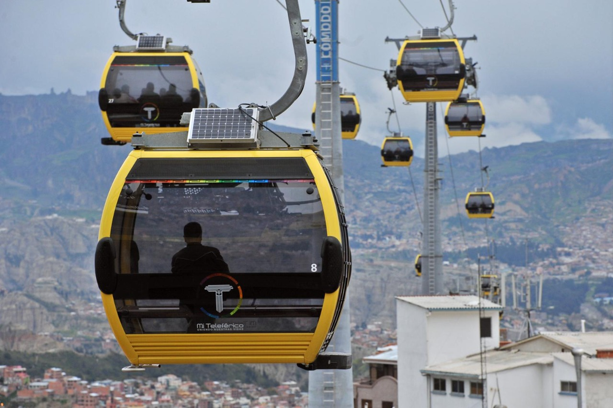
El Alto está 400 metros por encima de La Paz. Tres formas seguras de subir a la cuna del neo-andino.
Desde Estación Central (La Paz) hasta Estación 16 de Julio (El Alto). 5 Bs por trayecto. Vistas únicas del Illimani y la hoyada paceña durante el ascenso.
Van con guía bilingüe incluida en los paquetes Aurum y Platinum. Recogida en hotel y retorno garantizado tras el atardecer en la Ceja.
Si llegas desde el extranjero al aeropuerto Internacional de El Alto, el circuito comienza prácticamente al cruzar la salida. Recogida gratuita coordinada.
A 4150 m. el cuerpo necesita 24 horas para adaptarse. Recomendamos llegar con un día de anticipación y mantenerse hidratado durante el recorrido.
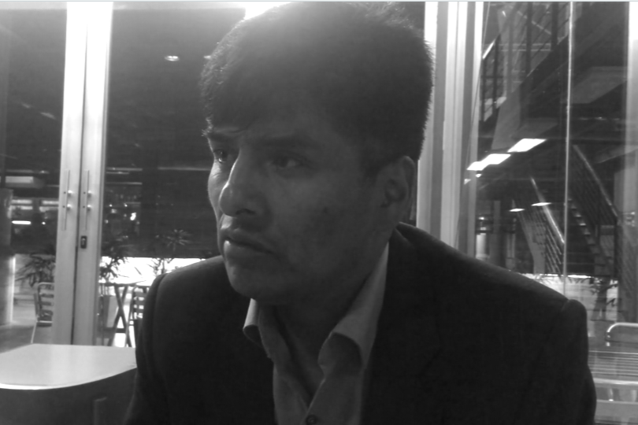
"Yo no imito a nadie. Soy aimara y construyo desde adentro de mi cultura, desde lo que somos."